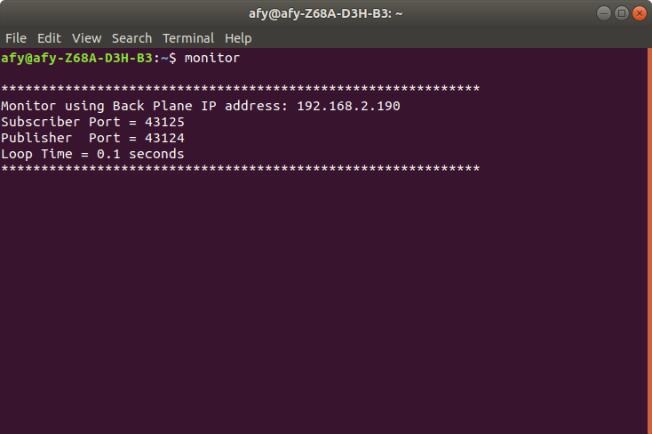
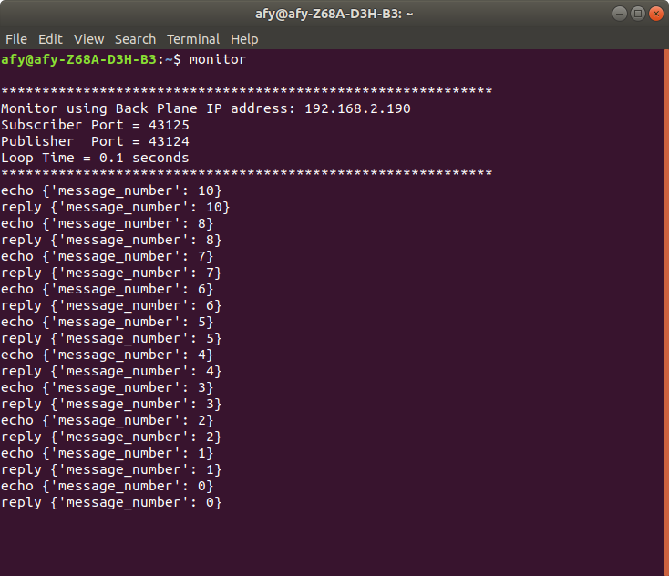
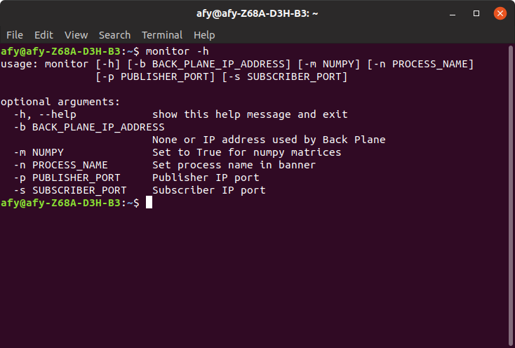

The Banyan Monitor
When Python Banyan is installed, an executable program called monitor is automatically installed.
The Monitor is a special Banyan component that prints all protocol messages published to the Backplane. It displays the message topic as well as the payload for each message. It is used mainly as a debugging aid to monitor and debug messaging traffic.
To see the Monitor in action, start the Backplane and server as described in Section 1, but before starting the client, open a terminal or command window and type:
monitor

The Monitor displays a familiar Banyan banner.
Now start the client. The monitor will display all of the protocol messages published by both the client and server.

The Monitor displays each protocol message. The topic is displayed followed by the payload. The topic is displayed as a string and the payload as a Python dictionary.
Note that CPU utilization is likely to increase when the Monitor is active, so once an application is debugged, you may wish to dismiss the Monitor.
The Monitor has several command line options available:

The monitor may be located on any computer and be connected to any Backplane by using the -b option in conjunction with the -s and -p options.
If you wish to display numpy data payloads, then use the -m option and set it to True.